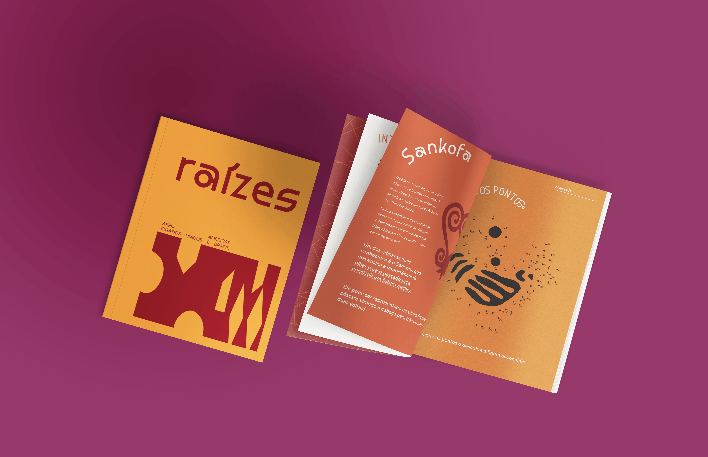
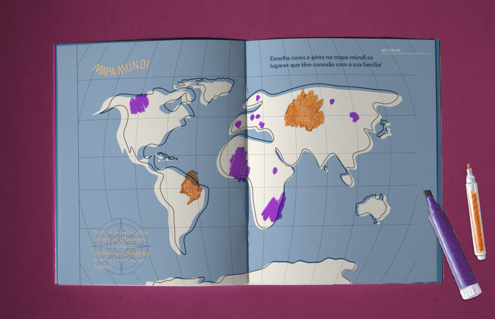
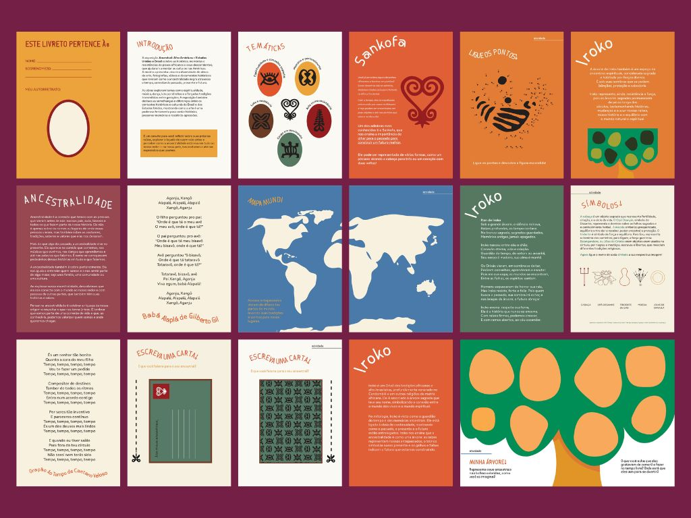

Raízes

01 — contexto
O projeto “Raízes” se aprofunda na rica e complexa herança afrodescendente no Brasil e nos Estados Unidos, concebido como material de apoio educativo para a exposição “Ancestral: Afro Américas”, realizada no MAB-FAAP.
02 — problema
O projeto aborda a sub-representação da história afrodescendente na educação formal, buscando tornar esses temas acessíveis e relevantes para o público infantojuvenil que visita a exposição.
03 — objetivo
O objetivo central é servir como ferramenta complementar à exposição, educando crianças e adolescentes sobre a história e cultura afrodescendente, promovendo a valorização de suas identidades culturais e estimulando o diálogo sobre resistência e ancestralidade.
04 — process
O desenvolvimento envolveu a concepção de um design visualmente atraente e interativo, a seleção de conteúdos relevantes sobre a herança afrodescendente e a elaboração de atividades que incentivam participação e reflexão, sempre buscando linguagem acessível e representatividade.

05 — solução
O livreto “Raízes” é um guia interativo que facilita a compreensão dos temas da exposição (ancestralidade, identidade, legado) através de elementos como a criação de árvores genealógicas e cartões postais para ancestrais, tornando a experiência de aprendizado pessoal e significativa para o público jovem.
